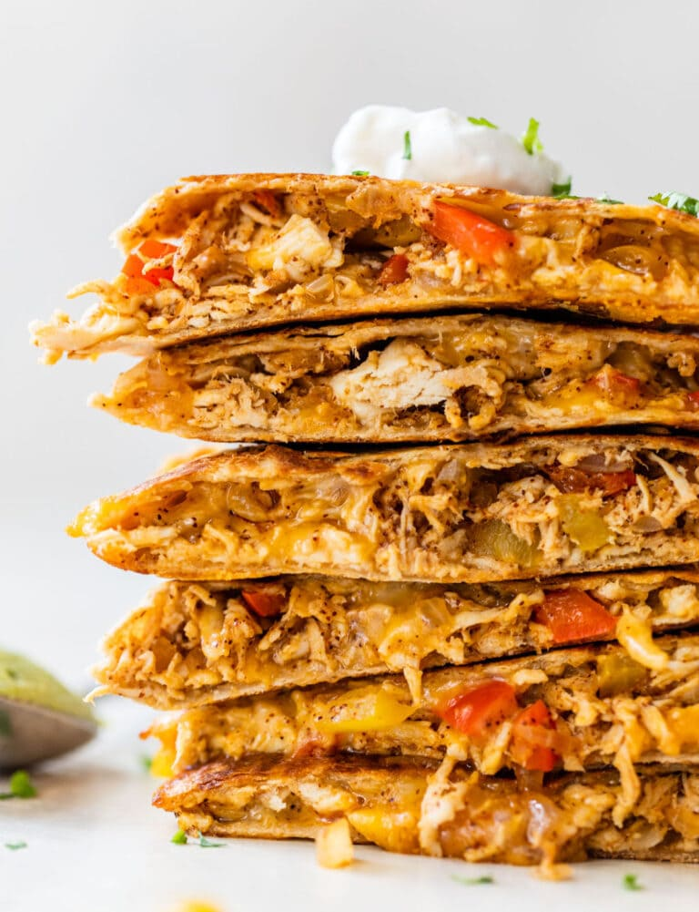

Chicken Quesadilla

Description
This is a recipe for making chicken quesadillas at home. Stop spending so much on Doordash and cook this amazing meal at home!
Ingredients
- Chicken. Tender, protein-packed chicken breast (or thighs).
- Cheese. Choose a cheese or a mixture of cheeses. Good options include pepper jack, montery jack, and sharp cheddar.
- Veggies. To make this chicken quesadilla healthy, you can pack it with delicious veggies. Bell peppers and onions are my favorite.
- Spices. Chili powder, salt, and garlic powder add just the right amount of flavor to the quesadilla.
- Tortilla. Choose the kind you like best.
- Toppings. Salsa, guacamole, queso, and sour cream (plain Greek yogurt works well too) are our go-to toppings. You could also add pico de gallo, fresh cilantro, or shredded lettuce.
Steps
- Add the chicken to a bowl, then stir in half of the spices.
- Sauté the vegetables with spices.
- Assemble the quesadillas by piling the fillings onto one half of a tortilla.
- Fold the empty tortilla half over the top. Repeat.
- Cook the quesadillas two at a time in a skillet.
- Flip after about 4 minutes, cooking on the other side for a few minutes. Let cool, slice, and DIG IN!
Home